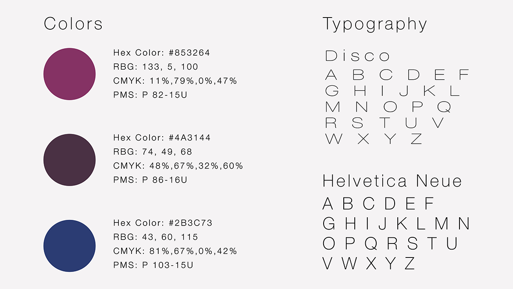
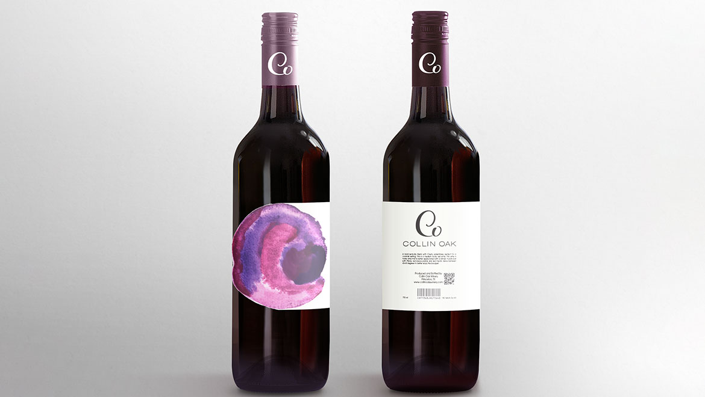
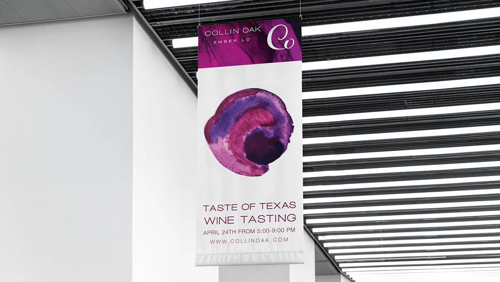
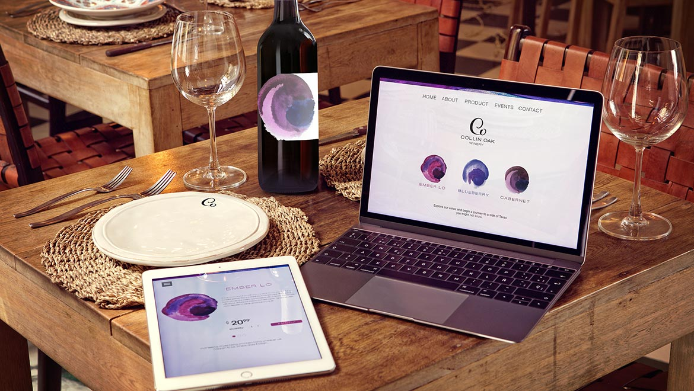
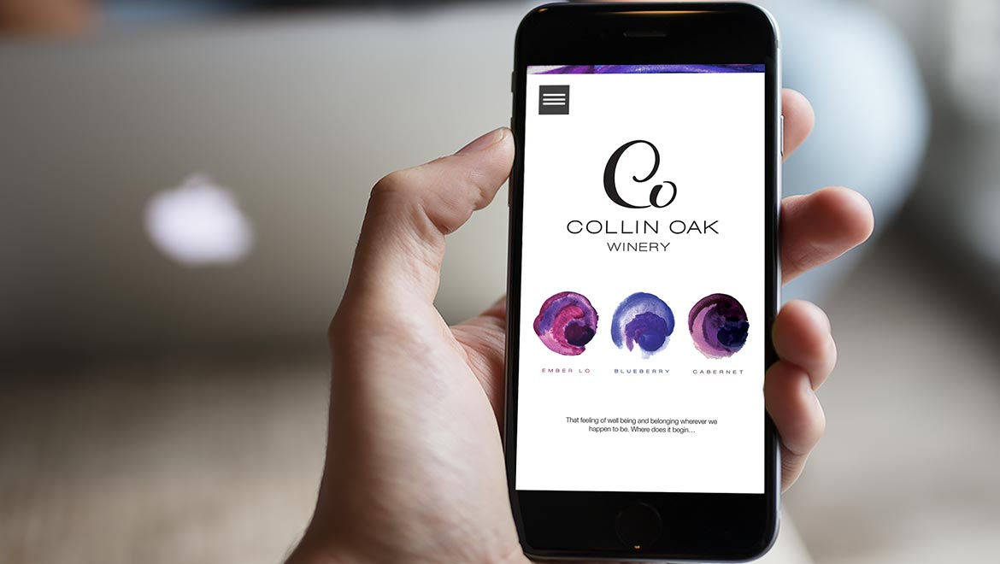

Collin Oak Winery
Watercolor, lettering and a coordinated print system
A winery identity project exploring how expressive artwork and clear visual hierarchy can distinguish products while connecting packaging and promotional materials.
From concept to applications
My contribution
Developed a visual direction using watercolor marks to distinguish flavors and hand-lettered typography to convey the winery’s personality.
Design decisions
Color and watercolor marks provide differentiation, while a shared logo and typography connect the family of applications.
Deliverables
Logo explorations, watercolor marks, color and typography specifications, packaging and promotional applications.
Explore the identity
The source project pairs hand-crafted lettering with expressive watercolor marks. The visual system keeps the brand recognizable while giving individual products a distinct cue.



Carry the system into print
The applications demonstrate how artwork, lettering and typography can work together across packaging and branded collateral. These are presentation mockups from the original project.





